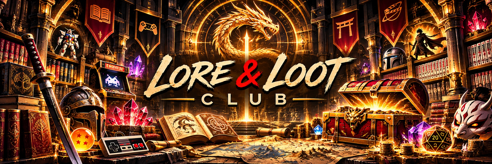
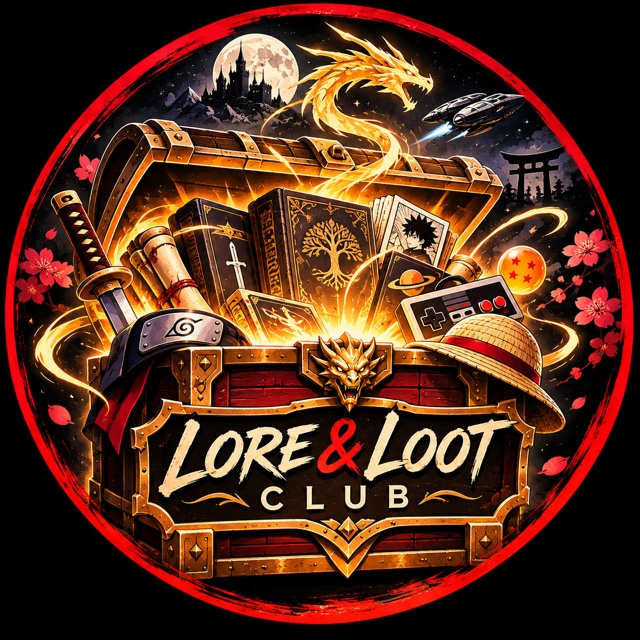

A hangout for LitRPG, fantasy and sci-fi readers
Lore & Loot Club is a fan-run spot for people who can't stop at one more chapter. Books, audiobooks, anime, manga and webtoons, picked by the people who show up.
What should the club cover next?
Pick one. The winner gets the next full review and group discussion on Instagram. You can change your vote any time.
On the nightstand right now
By Jack_Golightly, a serial from Royal Road. The System arrives on Earth and one man's Gift makes every monster drop loot. Thoughts post on Instagram as the chapters go by.
What's on the shelf
- LitRPG
- Levels, stats, skills and loot built into the story. The home genre.
- Fantasy
- Epic, progression and cozy. Swords, magic systems and long series.
- Sci-fi
- Space opera, first contact and the end of the world, sometimes with a talking cat.
- Anime
- Seasonal watches and the classics worth a rewatch.
- Manga
- Shonen, seinen and the series that never got an adaptation.
- Webtoons
- Vertical-scroll series, including the ones adapted from web novels.
How a group read runs
Vote
Pick the next title in the poll above.
Borrow
Check your library first. Many lend ebooks and audiobooks through apps like Libby and Hoopla.
Check in
Each check-in post on Instagram names the chapters it covers, so nobody gets spoiled.
Talk it over
When the month ends, the review goes up and you can argue with it in the comments.
Questions
What is Lore & Loot Club?
Lore & Loot Club is a fan-run hangout for people who read LitRPG, fantasy and sci-fi and watch anime, read manga and webtoons. Reviews and discussion happen on Instagram at @loreandlootclub, and this site is where you vote on what the club covers next.
What is LitRPG?
LitRPG is a genre where game mechanics are part of the story. Characters have levels, stats, skills and loot, and they know it. Dungeon Crawler Carl is one of the best known examples.
How do I vote on what the club covers next?
Pick a title in the poll on the home page. You get one vote and you can change it whenever you like. No account or sign-up is needed.
How do the group reads work?
Each month the club picks one title. Check-in posts on Instagram through the month name the chapters they cover, so you can join the discussion without being spoiled.
Do I have to buy the books?
No. The club motto is Farm your local library. Many public libraries lend ebooks and audiobooks through apps like Libby and Hoopla, and a library card is free.
Does it cost anything to join?
No. Voting here and following @loreandlootclub on Instagram are both free.

Pull up a chair
Follow along, vote on the next read and tell the club what it got wrong.
Follow on Instagram